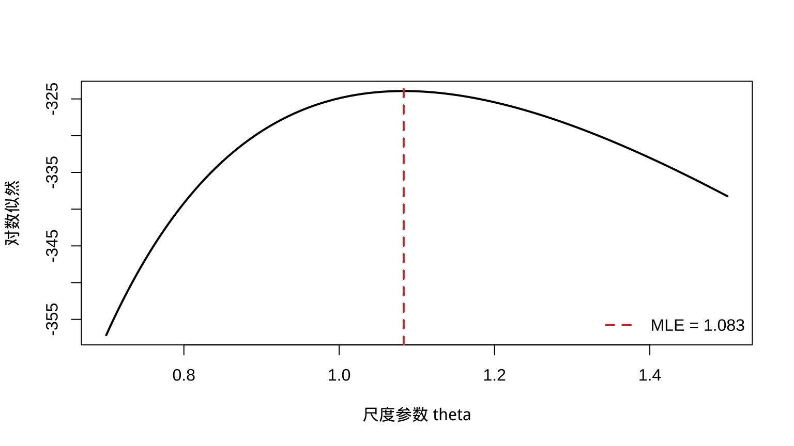
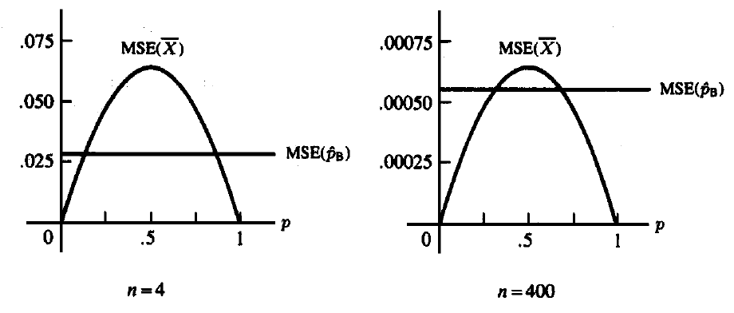

第 7 点估计
本章对应原课件 chap-7.tex 及三个 LaTeX 子文件，讨论矩估计、最大似然、Bayes 估计、EM 算法，以及用 MSE、无偏性、Cramér–Rao 下界、Rao–Blackwell 定理和损失函数评价估计量。原课件图形已保留；相关旧 R 示例按最小必要修改转为稳定的 knitr 代码。
7.1 点估计量与估计值
定义 7.1 样本的任意函数
\[W=W(X_1,\ldots,X_n)\]
都可称为参数的点估计量。把观测值代入所得的数值 \(W(\mathbf x)\) 称为估计值。
“任意统计量都可以作为点估计量”只说明形式上的资格；一个估计量是否值得采用，还要由偏差、方差、风险或其他最优性标准判断。
7.2 矩估计法
设总体含 \(k\) 个未知参数 \(\boldsymbol\theta=(\theta_1,\ldots,\theta_k)\)，定义样本原点矩与总体原点矩
\[ m_j=\frac1n\sum_{i=1}^nX_i^j,qquad \mu_j(\boldsymbol\theta)=E_{\boldsymbol\theta}(X^j),qquad j=1,\ldots,k. \]
矩估计通过求解
\[m_j=\mu_j(\boldsymbol\theta),\qquad j=1,\ldots,k\]
得到 \(\hat\theta_1,\ldots,\hat\theta_k\)。
例 7.1 若 \(X_i\overset{\mathrm{iid}}\sim\operatorname{Bin}(k,p)\)，且 \(k,p\) 都未知，则
\[E(X)=kp,\qquad E(X^2)=kp(1-p)+k^2p^2.\]
记 \(v_n=n^{-1}\sum_i(X_i-\bar X)^2\)，矩估计为
\[ \hat k_{\mathrm{MOM}}=\frac{\bar X^2}{\bar X-v_n},qquad \hat p_{\mathrm{MOM}}=\frac{\bar X}{\hat k_{\mathrm{MOM}}}. \]
若 \(\bar X-v_n\le0\)，方程在允许的参数空间中没有内部解；而 \(k\) 是整数时还需结合参数约束选择相邻整数。这是矩估计可能产生不可行结果的例子。
7.3 最大似然估计及不变性
设样本联合似然为
\[L(\boldsymbol\theta\mid\mathbf x)=\prod_{i=1}^nf(x_i\mid\boldsymbol\theta).\]
定义 7.2 对固定样本点 \(\mathbf x\)，若参数值 \(\hat{\boldsymbol\theta}(\mathbf x)\) 使 \(L(\boldsymbol\theta\mid\mathbf x)\) 在参数空间上达到最大，则称它为 \(\boldsymbol\theta\) 的最大似然估计量（MLE）。
通常最大化对数似然 \(\ell(\boldsymbol\theta)=\log L(\boldsymbol\theta)\) 更稳定。内部极值候选点满足得分方程
\[\nabla_{\boldsymbol\theta}\ell(\boldsymbol\theta)=\mathbf0,\]
但还必须检查边界、参数约束以及极值是否存在。
定理 7.1 MLE 不变性。 若 \(\hat\theta\) 是 \(\theta\) 的 MLE，则 \(\tau(\hat\theta)\) 是 \(\tau(\theta)\) 的 MLE；当 \(\tau\) 非一一对应时，应把具有同一函数值的参数点一起取上确界。
原始 R 示例用指数尺度模型展示似然峰值，但直接计算似然会数值下溢。下面保留同一模型、样本生成方式和参数搜索，只改用对数似然。
set.seed(7301)
theta_true <- 1.1
n <- 300
x <- rexp(n, rate = 1 / theta_true)
theta_grid <- seq(0.7, 1.5, length.out = 200)
loglik <- -n * log(theta_grid) - sum(x) / theta_grid
theta_hat <- mean(x)
plot(theta_grid, loglik, type = "l", lwd = 2,
xlab = "尺度参数 theta", ylab = "对数似然")
abline(v = theta_hat, col = "#C43C39", lty = 2, lwd = 2)
legend("bottomright", sprintf("MLE = %.3f", theta_hat),
col = "#C43C39", lty = 2, lwd = 2, bty = "n")
图 7.1: 指数尺度参数的对数似然与最大似然估计
7.4 Gamma 双参数最大似然
对形状–尺度参数化
\[ f(y;\alpha,\beta)=\frac{y^{\alpha-1}e^{-y/\beta}} {\Gamma(\alpha)\beta^\alpha},\qquad y>0, \]
对数似然为
\[ \ell(\alpha,\beta)=-n\log\Gamma(\alpha)-n\alpha\log\beta +(\alpha-1)\sum_i\log y_i-\frac{\sum_i y_i}{\beta}. \]
得分方程给出 \(\hat\beta=\bar y/\hat\alpha\)，而 \(\hat\alpha\) 满足
\[ \log\hat\alpha-\psi(\hat\alpha) =\log\bar y-\frac1n\sum_i\log y_i, \]
其中 \(\psi\) 是 digamma 函数。该方程通常用一维求根或联合数值优化求解。
7.5 Bayes 估计与 Beta–Binomial 共轭
若 \(\mathbf X\sim f(\mathbf x\mid\theta)\)，先验为 \(\pi(\theta)\)，则
\[ \pi(\theta\mid\mathbf x) =\frac{f(\mathbf x\mid\theta)\pi(\theta)}{m(\mathbf x)},qquad m(\mathbf x)=\int f(\mathbf x\mid\theta)\pi(\theta)\,d\theta. \]
例 7.2 若 \(X_i\sim\operatorname{Bernoulli}(p)\)，\(Y=\sum_iX_i\)，并取 \(p\sim\operatorname{Beta}(\alpha,\beta)\)，则
\[ p\mid Y=y\sim\operatorname{Beta}(y+\alpha,n-y+\beta). \]
在平方误差损失下，Bayes 估计量是后验均值
\[ \hat p_B=\frac{y+\alpha}{n+\alpha+\beta} =\frac n{n+\alpha+\beta}\frac yn +\frac{\alpha+\beta}{n+\alpha+\beta}\frac\alpha{\alpha+\beta}. \]
它把样本比例向先验均值作加权收缩。
7.6 EM 算法：潜变量与基本步骤
设 \(\mathbf X\) 是观测数据，\(\mathbf Z\) 是缺失或潜在数据，完整数据为 \(\mathbf Y=(\mathbf X,\mathbf Z)\)。在第 \(t\) 次迭代，定义
\[ \begin{aligned} Q(\boldsymbol\theta\mid\boldsymbol\theta^{(t)}) &=E_{\mathbf Z\mid\mathbf X,\boldsymbol\theta^{(t)}} \{\log f_{\mathbf Y}(\mathbf Y\mid\boldsymbol\theta)\mid\mathbf X=\mathbf x\}\\ &=\int\log f_{\mathbf Y}(\mathbf y\mid\boldsymbol\theta) f_{\mathbf Z\mid\mathbf X}(\mathbf z\mid\mathbf x,\boldsymbol\theta^{(t)})\,d\mathbf z. \end{aligned} \]
EM 的循环为：
- E 步：计算 \(Q(\boldsymbol\theta\mid\boldsymbol\theta^{(t)})\)；
- M 步：令 \(\boldsymbol\theta^{(t+1)}\) 最大化该 \(Q\) 函数；
- 重复迭代，直到参数变化或目标函数变化小于给定容差。
EM 使用的是完整数据对数似然的条件期望。在通常正则条件下，观测数据似然不会下降；收敛点可能是局部极值或鞍点，因此初值和诊断仍然重要。
7.7 缺失响应线性回归的 EM 形式
考虑
\[ \mathbf Y=\mathbf W\boldsymbol\beta+\boldsymbol\varepsilon,qquad \boldsymbol\varepsilon\sim N(\mathbf0,\sigma^2\mathbf I_n), \]
其中部分响应缺失，\(\sigma^2\) 暂视为已知。E 步中的目标函数为
\[ \begin{aligned} Q(\boldsymbol\beta\mid\boldsymbol\beta^{(t)}) &=-\frac n2\log(2\pi\sigma^2)\\ &\quad-\frac1{2\sigma^2} E\{(\mathbf Y-\mathbf W\boldsymbol\beta)^\top (\mathbf Y-\mathbf W\boldsymbol\beta)\mid\mathbf x,\boldsymbol\beta^{(t)}\}. \end{aligned} \]
M 步给出
\[ \boldsymbol\beta^{(t+1)} =(\mathbf W^\top\mathbf W)^{-1}\mathbf W^\top E(\mathbf Y\mid\mathbf x,\boldsymbol\beta^{(t)}), \]
其中
\[ E(Y_j\mid\mathbf x,\boldsymbol\beta^{(t)})= \begin{cases} y_j,&Y_j\text{ 已观测},\\ \mathbf w_j^\top\boldsymbol\beta^{(t)},&Y_j\text{ 缺失}. \end{cases} \]
在这个只缺失响应、设计矩阵固定且缺失机制可忽略的简单模型中，缺失响应本身不增加 \(\boldsymbol\beta\) 的观测信息；EM 表达主要用于展示完整数据迭代结构。
7.8 均方误差、偏差与正态方差估计
定义 7.3 估计量 \(W\) 对参数 \(\theta\) 的均方误差为
\[ \operatorname{MSE}_\theta(W)=E_\theta(W-\theta)^2 =\operatorname{Var}_\theta(W)+\{E_\theta(W)-\theta\}^2. \]
若 \(E_\theta(W)=\theta\) 对所有 \(\theta\) 成立，则 \(W\) 无偏。
若 \(X_i\sim N(\mu,\sigma^2)\)，则 \(\bar X\) 与 \(S^2=(n-1)^{-1}\sum_i(X_i-\bar X)^2\) 都无偏，且
\[ \operatorname{MSE}(\bar X)=\frac{\sigma^2}{n},qquad \operatorname{MSE}(S^2)=\frac{2\sigma^4}{n-1}. \]
正态模型下 \(\sigma^2\) 的 MLE 为 \(\hat\sigma^2_{\mathrm{MLE}}=(n-1)S^2/n\)。它有偏，但
\[ \operatorname{MSE}(\hat\sigma^2_{\mathrm{MLE}}) =\sigma^4\frac{2n-1}{n^2} <\frac{2\sigma^4}{n-1}. \]
这说明无偏性并不自动等同于最小 MSE；对尺度参数使用平方误差时还应注意单位变换对损失的影响。
7.9 二项 Bayes 估计量的 MSE
样本比例 \(\hat p=Y/n\) 的 MSE 为 \(p(1-p)/n\)。Beta 先验下 \(\hat p_B=(Y+\alpha)/(n+\alpha+\beta)\) 的 MSE 为
\[ \frac{np(1-p)}{(n+\alpha+\beta)^2} +\left(\frac{np+\alpha}{n+\alpha+\beta}-p\right)^2. \]
若缺少明确先验信息，原课件选择 \(\alpha=\beta=\sqrt{n/4}\)，使其 MSE 与 \(p\) 无关：
\[ \hat p_B=\frac{Y+\sqrt{n/4}}{n+\sqrt n},qquad \operatorname{MSE}(\hat p_B)=\frac{n}{4(n+\sqrt n)^2}. \]

图 7.2: 原课件中样本比例与 Bayes 估计量的 MSE 比较（n=4 与 n=400）
7.10 最佳无偏估计与 UMVUE
定义 7.4 若 \(W^*\) 对 \(\tau(\theta)\) 无偏，并且对任意其他无偏估计量 \(W\) 都有
\[\operatorname{Var}_\theta(W^*)\le\operatorname{Var}_\theta(W) \quad\text{对所有 }\theta,\]
则称 \(W^*\) 是 \(\tau(\theta)\) 的一致最小方差无偏估计量（UMVUE）。
在无偏估计量类中，MSE 等于方差，因此可以用方差作统一比较；但寻找 UMVUE 往往需要信息下界或充分完备统计量。
7.11 Cramér–Rao 下界
定理 7.2 在支撑集不随 \(\theta\) 改变、可交换微分与积分且方差有限等正则条件下，任意估计量 \(W\) 满足
\[ \operatorname{Var}_\theta(W)\ge \frac{\{dE_\theta(W)/d\theta\}^2}{I_n(\theta)}, \qquad I_n(\theta)=E_\theta\left[\left\{\frac\partial{\partial\theta} \log f(\mathbf X\mid\theta)\right\}^2\right]. \]
对 iid 样本，\(I_n(\theta)=nI_1(\theta)\)。在正则条件下，得分均值为 0，并有
\[ I_1(\theta)=-E_\theta\left\{\frac{\partial^2}{\partial\theta^2} \log f(X\mid\theta)\right\}. \]
例 7.3 若 \(X_i\sim\operatorname{Poisson}(\lambda)\)，则 \(I_1(\lambda)=1/\lambda\)。任何 \(\lambda\) 的无偏估计量都满足
\[\operatorname{Var}_\lambda(W)\ge\lambda/n.\]
样本均值的方差恰为 \(\lambda/n\)，因而达到下界并是 UMVUE。
7.12 非正则均匀模型
若 \(X_i\sim U(0,\theta)\)，支撑集随 \(\theta\) 改变，不能忽略积分上限的导数，因此常规 Cramér–Rao 结论不适用。
令 \(Y=X_{(n)}\)，则
\[f_Y(y\mid\theta)=ny^{n-1}\theta^{-n},\qquad0<y<\theta,\]
并且
\[E_\theta(Y)=\frac n{n+1}\theta,qquad \operatorname{Var}_\theta\left(\frac{n+1}{n}Y\right) =\frac{\theta^2}{n(n+2)}. \]
所以 \((n+1)Y/n\) 是 \(\theta\) 的无偏估计量。它看似“突破”错误套用所得的下界，实际原因正是正则条件失败：
\[ \frac d{d\theta}\int_0^\theta h(x)f(x\mid\theta)\,dx \ne\int_0^\theta h(x)\frac\partial{\partial\theta}f(x\mid\theta)\,dx. \]
7.13 正态方差下界与达到条件
若 \(X_i\sim N(\mu,\sigma^2)\)，对 \(\sigma^2\) 的无偏估计量，信息下界为 \(2\sigma^4/n\)。样本方差满足 \(\operatorname{Var}(S^2)=2\sigma^4/(n-1)\)，故不达到这一有限样本下界。
定理 7.3 若正则条件成立，\(W\) 是 \(\tau(\theta)\) 的无偏估计量，则 \(W\) 达到 Cramér–Rao 下界，当且仅当存在只依赖 \(\theta\) 的 \(a(\theta)\) 使
\[ a(\theta)\{W(\mathbf x)-\tau(\theta)\} =\frac\partial{\partial\theta}\log L(\theta\mid\mathbf x). \]
当正态均值 \(\mu\) 已知时，
\[ \frac\partial{\partial\sigma^2}\log L =\frac n{2\sigma^4} \left\{\frac1n\sum_i(x_i-\mu)^2-\sigma^2\right\}, \]
所以 \(n^{-1}\sum_i(X_i-\mu)^2\) 达到下界。若 \(\mu\) 未知，该统计量不可计算，需转而使用充分性与完备性工具。
7.14 Rao–Blackwell 与 Lehmann–Scheffé
定理 7.4 Rao–Blackwell 定理。 若 \(W\) 是 \(\tau(\theta)\) 的无偏估计量，\(T\) 对 \(\theta\) 充分，则
\[\Phi(T)=E(W\mid T)\]
仍然无偏，且 \(\operatorname{Var}_\theta\{\Phi(T)\}\le\operatorname{Var}_\theta(W)\)。
该结论来自全期望与全方差公式。充分性保证条件期望的形式不含未知参数，从而确实是统计量。
定理 7.5 Lehmann–Scheffé 定理。 若 \(T\) 完备且充分，任何只依赖 \(T\) 的无偏估计量 \(\phi(T)\) 都是其期望的唯一 UMVUE。
最佳无偏估计量在几乎处处意义下唯一。等价刻画是：一个无偏估计量为 UMVUE，当且仅当它与每一个期望恒为 0 的无偏估计量不相关。
对 \(U(0,\theta)\) 样本，\(Y=X_{(n)}\) 完备充分，因此 \((n+1)Y/n\) 是 \(\theta\) 的唯一 UMVUE。
7.15 二项模型中的 Rao–Blackwell 化
设 \(X_i\sim\operatorname{Bin}(k,\theta)\)，\(k\) 已知，目标为估计单次 \(\operatorname{Bin}(k,\theta)\) 恰有一次成功的概率
\[\tau(\theta)=k\theta(1-\theta)^{k-1}.\]
\(h(X_1)=I(X_1=1)\) 是无偏估计量，而 \(T=\sum_iX_i\sim\operatorname{Bin}(nk,\theta)\) 完备充分。故 UMVUE 为
\[ \begin{aligned} \phi(t)&=E\{h(X_1)\mid T=t\} =P(X_1=1\mid T=t)\\ &=\frac{k\theta(1-\theta)^{k-1} \binom{k(n-1)}{t-1}\theta^{t-1}(1-\theta)^{k(n-1)-t+1}} {\binom{kn}{t}\theta^t(1-\theta)^{kn-t}}\\ &=k\frac{\binom{k(n-1)}{t-1}}{\binom{kn}{t}}. \end{aligned} \]
参数 \(\theta\) 在条件化后消失，体现了充分统计量的数据约简作用。
7.16 损失函数与风险
常用损失包括绝对误差 \(L(\theta,a)=|a-\theta|\) 和平方误差 \(L(\theta,a)=(a-\theta)^2\)。估计规则 \(\delta\) 的风险为
\[ R(\theta,\delta)=E_\theta L\{\theta,\delta(\mathbf X)\} =\int_{\mathcal X}L\{\theta,\delta(\mathbf x)\}f(\mathbf x\mid\theta)\,d\mathbf x. \]
若 \(R(\theta,\delta_1)<R(\theta,\delta_2)\) 对所有 \(\theta\) 成立，则 \(\delta_1\) 一致优于 \(\delta_2\)。
例 7.4 在正态模型中用平方误差估计 \(\sigma^2\)，考虑 \(\delta_b=bS^2\)。其风险为
\[ R((\mu,\sigma^2),\delta_b) =\left\{\frac{2b^2}{n-1}+(b-1)^2\right\}\sigma^4. \]
对 \(b\) 求导得到 \(b=(n-1)/(n+1)\)。因此
\[\tilde S^2=\frac{n-1}{n+1}S^2 =\frac1{n+1}\sum_i(X_i-\bar X)^2\]
在 \(\{bS^2:b\ge0\}\) 这一估计量类中风险最小。
7.17 Bayes 风险与两类 Bayes 规则
先验 \(\pi(\theta)\) 下的平均风险为
\[r(\pi,\delta)=\int_\Theta R(\theta,\delta)\pi(\theta)\,d\theta.\]
利用 \(f(\mathbf x\mid\theta)\pi(\theta)=\pi(\theta\mid\mathbf x)m(\mathbf x)\)，可写成
\[ r(\pi,\delta)=\int_{\mathcal X} \left[\int_\Theta L\{\theta,\delta(\mathbf x)\} \pi(\theta\mid\mathbf x)\,d\theta\right]m(\mathbf x)\,d\mathbf x. \]
因此逐个 \(\mathbf x\) 最小化后验期望损失即可得到 Bayes 规则：
- 平方误差损失下，\(\delta^\pi(\mathbf x)=E(\theta\mid\mathbf x)\)；
- 绝对误差损失下，\(\delta^\pi(\mathbf x)\) 是后验分布的任一中位数。
7.18 正态–正态 Bayes 估计
若 \(X_i\sim N(\theta,\sigma^2)\)，先验 \(\theta\sim N(\mu,\tau^2)\)，且 \(\sigma^2,\mu,\tau^2\) 已知，则
\[ E(\theta\mid\bar x) =\frac{\tau^2}{\tau^2+\sigma^2/n}\bar x +\frac{\sigma^2/n}{\tau^2+\sigma^2/n}\mu, \]
\[ \operatorname{Var}(\theta\mid\bar x) =\frac{\tau^2\sigma^2/n}{\tau^2+\sigma^2/n}. \]
后验为正态分布，其均值与中位数相同，因此平方误差和绝对误差下的 Bayes 估计量在本例中一致，都是上述后验均值。
7.19 本章小结
- 矩估计匹配样本矩与总体矩；最大似然选择最能支持观测样本的参数。
- Bayes 估计把先验与似然合并，EM 用潜变量的完整数据对数似然迭代优化。
- MSE 在偏差与方差之间权衡；无偏约束下可研究 UMVUE。
- Cramér–Rao 下界依赖正则条件，Rao–Blackwell 与完备充分统计量提供更普遍的改进路径。
- 损失与风险明确了“最佳”的决策含义；不同损失可能产生不同的 Bayes 规则。
原课件本章参考：Casella, G. and Berger, R. L. (2002), Statistical Inference, 2nd ed., Chapter 7；Dempster, A. P., Laird, N. M. and Rubin, D. B. (1977), “Maximum Likelihood from Incomplete Data via the EM Algorithm,” Journal of the Royal Statistical Society, Series B, 39, 1–38。